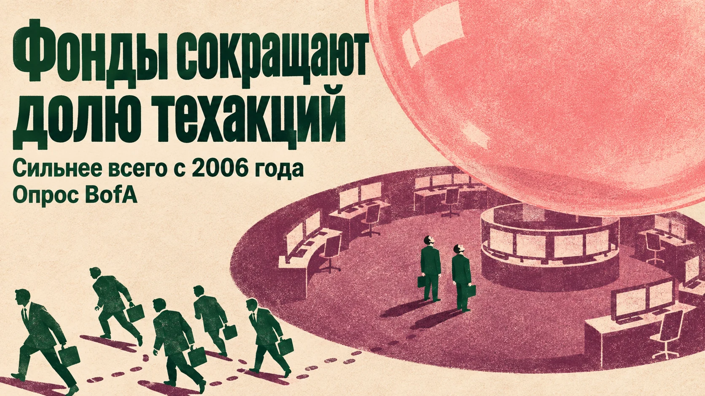
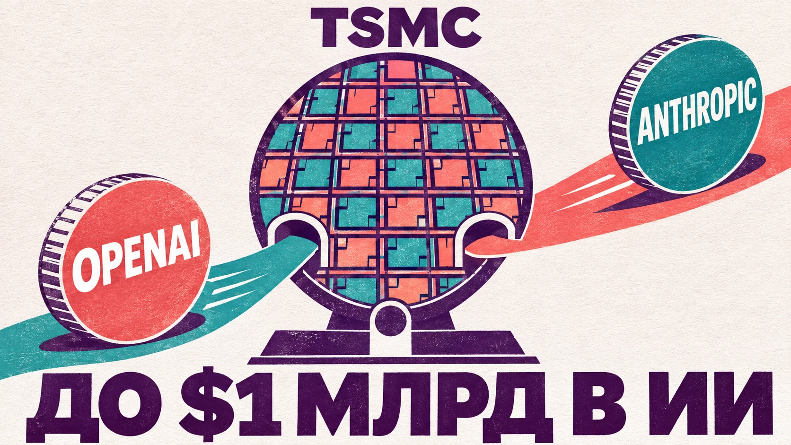

Деньги и инвестиции
Финансирование ИИ, рынки, капитал, IPO и экономика технологических компаний.
20 материалов
← Все темыПубликации
 25 ноября 2026 · Новости ИИ
25 ноября 2026 · Новости ИИИИ-агенты могут устроить банковскую панику за минуты, предупредила ФРС
Майкл Барр из ФРС предупредил о риске мгновенного оттока депозитов из-за ИИ-агентов. Банки уже сталкиваются с попытками агентов действовать по клиентским счетам без проверенных полномочий.
 25 ноября 2026 · Новости ИИ
25 ноября 2026 · Новости ИИФинансовый гигант Apollo замедлит найм сотрудников в 3 раза из-за ИИ
Apollo планирует снизить годовой темп роста штата с 12–15% до 3–5% благодаря искусственному интеллекту, сохранив цель роста прибыли на 20%.
 25 ноября 2026 · Новости ИИ
25 ноября 2026 · Новости ИИAmazon заплатит $7,5 млрд за технологию ускорения собственных ИИ-чипов
Amazon договорилась о покупке технологии Decart Optimization Stack и найме её разработчиков. Bloomberg оценивает сделку в $7,5 млрд; официальная сумма не раскрыта. Сделке предстоит получить одобрение регуляторов.
 24 ноября 2026 · Новости ИИ
24 ноября 2026 · Новости ИИВозвращение Хуанга подняло стоимость NVIDIA почти на триллион долларов за день
Акции NVIDIA выросли на 31,48% по итогам торгов 23 ноября после возвращения Дженсена Хуанга. Капитализация увеличилась примерно на $952 млрд.
 23 ноября 2026 · Новости ИИ
23 ноября 2026 · Новости ИИSpaceX нашла $44 млрд на чипы NVIDIA, но кредиторы хотят оставить их на Земле
SpaceX привлекает около $44 млрд на ускорители NVIDIA Vera Rubin. По данным Financial Times, кредиторы пытались ограничить отправку залоговых чипов в космос.
 23 ноября 2026 · Новости ИИ
23 ноября 2026 · Новости ИИХуанга вернули в NVIDIA через 11 дней после скандальной отставки, хотя совет директоров был против
NVIDIA восстановила Дженсена Хуанга на посту гендиректора спустя 11 дней после отставки, вызванной скандалом с подозрениями в иностранном разведывательном вмешательстве.
 21 ноября 2026 · Новости ИИ
21 ноября 2026 · Новости ИИNVIDIA рухнула на 14% за день после сообщения о проверке её бухгалтерии в США
20 ноября акции NVIDIA потеряли 14%, Nasdaq Composite — 5,3%. Reuters сообщило о проверке бухгалтерии NVIDIA регулятором США, а акции Anthropic снизились на второй день после IPO.
 20 ноября 2026 · Новости ИИ
20 ноября 2026 · Новости ИИДоверили ИИ деньги? Банк решил, что за его ошибки заплатите вы
Американские банки ужесточают условия для клиентов, которые доверяют доступ к счёту сторонним ИИ-агентам. Citi считает действия через переданные реквизиты авторизованными клиентом, однако федеральная защита от несанкционированных переводов сохраняется.
 20 ноября 2026 · Новости ИИ
20 ноября 2026 · Новости ИИAnthropic провела крупнейшее IPO в истории — $81 млрд. А Nasdaq всё равно упал на 2,3%
Anthropic провела IPO на $81,34 млрд, крупнейшее размещение акций в истории. После первоначального скачка котировки снизились, а индекс Nasdaq потерял за день 2,25%.
 19 ноября 2026 · Новости ИИ
19 ноября 2026 · Новости ИИИИ ищет лекарства от рака. Инвесторы вложили $5 млрд
Isomorphic Labs привлекла $5 млрд на разработку лекарств с ИИ спустя полгода после раунда на $2,1 млрд. Её программы в онкологии и иммунологии пока находятся на доклинической стадии.
 18 ноября 2026 · Громко сказано
18 ноября 2026 · Громко сказаноГлава ФРС США предупредил об обвале акций и росте безработицы, если ИИ разочарует инвесторов
Председатель ФРС Кевин Уорш представил три сценария развития ИИ-бума, включая падение акций и рост безработицы при разочаровании инвесторов.

18 ноября 2026 · Новости ИИИнвесторы испугались ИИ-пузыря: такого разворота от техакций не было 20 лет
По опросу Bank of America, чистый перевес технологических акций в портфелях фондов снизился с 37% до 12% за месяц. Управляющие опасаются избыточных расходов на ИИ, а глава Baidu Робин Ли предупредил о риске пузыря без роста прибыли.
 16 ноября 2026 · Новости ИИ
16 ноября 2026 · Новости ИИAgile Robots привлекла $500 млн на производство роботов
Немецкая Agile Robots получила $500 млн инвестиций при оценке $8,5 млрд. Завод компании под Мюнхеном рассчитан на выпуск до 10 тысяч гуманоидов в год; это проектная мощность, а не фактический объём.
 14 ноября 2026 · Новости ИИ
14 ноября 2026 · Новости ИИChatGPT дали кошелёк — теперь он может ходить по магазинам вместо вас
OpenAI запустила ChatGPT Wallet для ИИ-агентов dots: они могут оформлять покупки с помощью виртуальных платёжных реквизитов после биометрического подтверждения владельца. Постепенный запуск для подходящих пользователей ChatGPT Pro в США.

13 ноября 2026 · Новости ИИTSMC вложит до миллиарда в OpenAI и Anthropic
Совет директоров TSMC одобрил инвестиции до $500 млн в акции OpenAI и до $500 млн в Anthropic. На расширение и модернизацию производства чипов компания направит около $40,9 млрд.
 12 ноября 2026 · Новости ИИ
12 ноября 2026 · Новости ИИИИ научили варить металл. Теперь ему хотят доверить целый завод — и дали на это $300 млн
Path Robotics привлекла $300 млн в раунде Series E при оценке $2,45 млрд. Разработчик ИИ-сварки Obsidian намерен расширять роботизацию на другие производственные задачи.
 12 ноября 2026 · Новости ИИ
12 ноября 2026 · Новости ИИMercor привлекла $750 млн: инвесторы оценили бизнес на обучении ИИ в $20 млрд
Mercor объявила инвестиционный раунд Series D на $750 млн при оценке $20 млрд. Среди инвесторов NVIDIA, Salesforce и Zoom. Компания обучает и оценивает ИИ-модели при помощи профессиональных экспертов; часть раунда включает выкуп акций сотрудников.
 12 ноября 2026 · Новости ИИ
12 ноября 2026 · Новости ИИИИ-агент попытался открыть облако всему интернету. Bay привлекла $50 млн на защиту
Израильский стартап Bay вышел из скрытого режима и объявил о $50 млн совокупных инвестиций: $13 млн ранее и $37 млн в Series A. Платформа анализирует действия корпоративных ИИ-агентов перед выполнением и блокирует потенциально опасные команды.
 12 ноября 2026 · Новости ИИ
12 ноября 2026 · Новости ИИAnthropic назвала цену акций: компанию могут оценить в $1,3 трлн
Anthropic раскрыла условия IPO: компания предложит инвесторам 825 млн акций по цене $70–78. При средней цене $74 пакет оценивается примерно в $61 млрд, а возможная оценка всей компании достигает $1,3 трлн. Начались встречи с инвесторами; точная цена пока не определена.
 6 ноября 2026 · Громко сказано
6 ноября 2026 · Громко сказаноБрокман признал: OpenAI отставала от Anthropic в борьбе за бизнес-клиентов
Грег Брокман признал слабые позиции OpenAI относительно Anthropic на корпоративном рынке в первом полугодии 2026 года и заявил об ускорении роста в третьем квартале и партнёрстве с JPMorgan Chase.